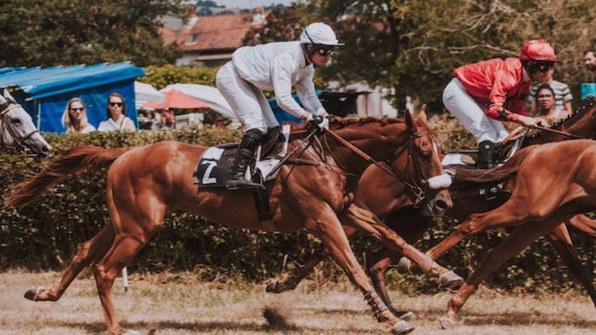

Стипль-чез в Фонтвелле
16-летний Фредди Джижелл выиграл на Rose of Arcadia без стремян. Кобыла резко закинулась на выходе на финишную прямую. Оставалось три препятствия и жокей не стал ловить стремена. Пара выиграла с преимуществом в 22 корпуса.
16-летний Фредди Джижелл выиграл на Rose of Arcadia без стремян. Кобыла резко закинулась на выходе на финишную прямую. Оставалось три препятствия и жокей не стал ловить стремена. Пара выиграла с преимуществом в 22 корпуса.
Wildatlanticstorm, уже побеждавший в Ремингтон Парке в компаниях уровня стейкс, ещё раз утвердил своё доминированиё на этой дорожке и выиграл Springboard Mile. Время на миле составило 1:38,24. Жокей - Леандро Гонсалвес.
Знаменитый стиплер Cue Card пал от сердечного приступа утром на работе. Он закончил карьеру в марте 2018 года и жил всё это время на семейной ферме ушедшего на пенсию тренера Коллина Тиззарда.
Всего за карьеру Cue Card выиграл 6 скачек, кроме King George он трижды выиграл Betfair Chase, дважды Ascot Chase. В понедельник мерин должен был принять участие в параде на ипподроме Кемптон перед Кing
George.